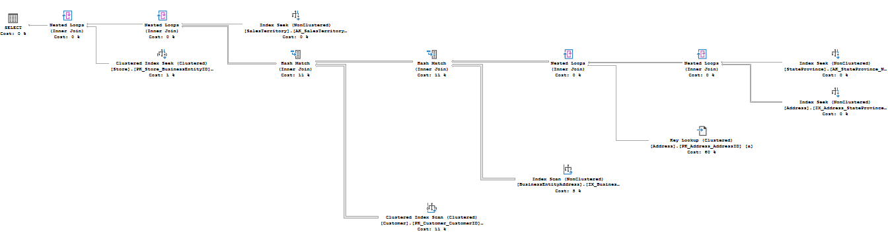
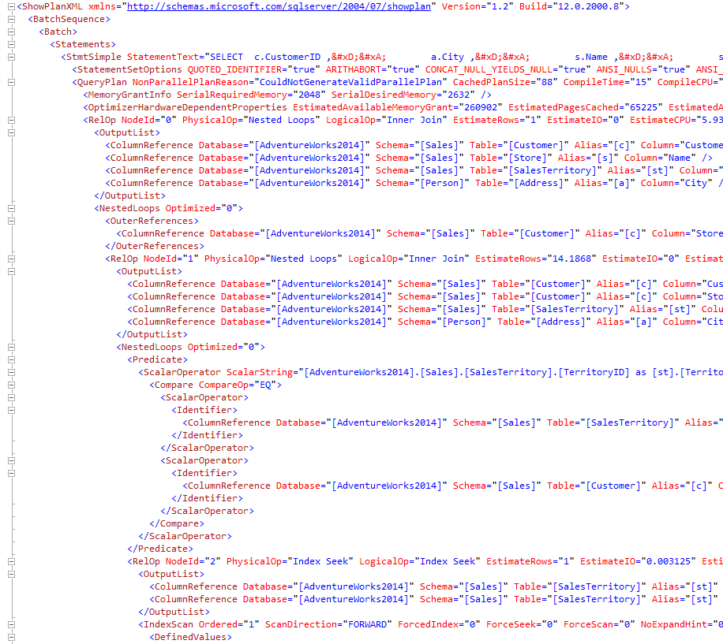
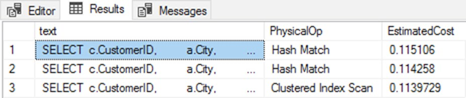
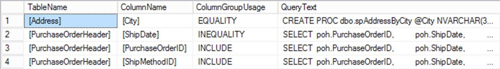

An XML plan isn't a different plan. It contains exactly the same information as the operators and property sheets — just in the format SQL Server actually stores and saves.
This is worth stating plainly, because the XML has barely been mentioned in twelve chapters and that's deliberate: you don't need to read XML to understand execution plans. The two ways to get at it:
.sqlplan file.SET SHOWPLAN_XML ON for the estimated plan, SET STATISTICS XML ON for the actual plan. More on that distinction shortly.SELECT c.CustomerID, a.City, s.Name, st.Name
FROM Sales.Customer AS c
JOIN Sales.Store AS s
ON c.StoreID = s.BusinessEntityID
JOIN Sales.SalesTerritory AS st
ON c.TerritoryID = st.TerritoryID
JOIN Person.BusinessEntityAddress AS bea
ON c.CustomerID = bea.BusinessEntityID
JOIN Person.Address AS a
ON bea.AddressID = a.AddressID
JOIN Person.StateProvince AS sp
ON a.StateProvinceID = sp.StateProvinceID
WHERE st.Name = 'Northeast' AND sp.Name = 'New York';
GO
Right-click → Show Execution Plan XML and you get a document that, even for this simple query, is far too big to print. The book shows just the opening. Don't be alarmed if yours differs in shape: new versions add content, and attribute order (sometimes elements) varies between versions.

ShowPlanXML → BatchSequence → Batch → Statements → StmtSimple, with the plan itself hanging below QueryPlan.StmtSimple elements, which is exactly how a cached
batch-from-Chapter-9 keeps its per-statement plans.
<StmtSimple StatementText="SELECT c.CustomerID, a.City, s.Name,
st.Name FROM Sales.Customer AS c
JOIN Sales.Store AS s ON c.StoreID = s.BusinessEntityID
JOIN Sales.SalesTerritory AS st
…etc…
WHERE st.Name = 'Northeast' AND sp.Name = 'New York'"
StatementId="1" StatementCompId="1" StatementType="SELECT"
StatementSqlHandle="0x0900A7CAC098F11600D15964667F6395453000000 …"
DatabaseContextSettingsId="3" ParentObjectId="0"
StatementParameterizationType="0" RetrievedFromCache="true"
StatementSubTreeCost="1.04758" StatementEstRows="1"
SecurityPolicyApplied="false" StatementOptmLevel="FULL"
QueryHash="0x6F422E0A48C0E2DA" QueryPlanHash="0xBF47C4983DC8361D"
StatementOptmEarlyAbortReason="TimeOut"
CardinalityEstimationModelVersion="140">
<StatementSetOptions QUOTED_IDENTIFIER="true" ARITHABORT="true"
CONCAT_NULL_YIELDS_NULL="true" ANSI_NULLS="true"
ANSI_PADDING="true" ANSI_WARNINGS="true"
NUMERIC_ROUNDABORT="false">
</StatementSetOptions>StatementText is the whole statement — which is the first clue about why sharing plans needs care. StatementParameterizationType="0" is the Chapter 9 code for "no parameterization".<QueryPlan NonParallelPlanReason="CouldNotGenerateValidParallelPlan"
CachedPlanSize="104" CompileTime="10" CompileCPU="10"
CompileMemory="1160">
<MemoryGrantInfo SerialRequiredMemory="2048" SerialDesiredMemory="2632" />
<OptimizerHardwareDependentProperties EstimatedAvailableMemoryGrant="157286"
EstimatedPagesCached="19660"
EstimatedAvailableDegreeOfParallelism="2"
MaxCompileMemory="1475656" />
<OptimizerStatsUsage>…</OptimizerStatsUsage>Listings 13-2 and 13-3 together are the same information as the properties of the first operator in the graphical plan. And you can see the translation table:
| In the XML | In the Properties sheet |
|---|---|
CompileTime | Compile Time |
CachedPlanSize | Cached Plan Size |
StatementOptmEarlyAbortReason | Reason for Early Termination of Statement Optimization |
StatementSubTreeCost | Estimated Subtree Cost |
NonParallelPlanReason | Why this plan isn't parallel (Chapter 11) |
NonParallelPlanReason="CouldNotGenerateValidParallelPlan" is the XML telling
you, in words, why Chapter 11's double arrows are absent. And
StatementOptmEarlyAbortReason="TimeOut" is the same message Chapter 10's
ten-table query gave us — the optimizer gave up searching join orders. These strings are often
easier to search for across thousands of plans than to spot by eye one plan at a time,
which is the whole point of the last section.
Inside QueryPlan sits a nested hierarchy of RelOp
elements. They appear in the order they are called — like reading a graphical plan from left
to right. So NodeId 0 is the outermost operator (a Nested Loops), NodeId 1 the next Nested
Loops, and so on down to the last operator called.
<RelOp NodeId="0" PhysicalOp="Nested Loops" LogicalOp="Inner Join" EstimateRows="1"
EstimateIO="0" EstimateCPU="5.9304e-005" AvgRowSize="149"
EstimatedTotalSubtreeCost="1.04758" Parallel="0" EstimateRebinds="0"
EstimateRewinds="0" EstimatedExecutionMode="Row">EstimatedExecutionMode="Row" is Chapter 12's other half.<OutputList>
<ColumnReference Database="[AdventureWorks2016]" Schema="[Sales]"
Table="[Customer]" Alias="[c]" Column="CustomerID" />
<ColumnReference Database="[AdventureWorks2016]" Schema="[Sales]"
Table="[Store]" Alias="[s]" Column="Name" />
<ColumnReference Database="[AdventureWorks2016]" Schema="[Sales]"
Table="[SalesTerritory]" Alias="[st]" Column="Name" />
<ColumnReference Database="[AdventureWorks2016]" Schema="[Person]"
Table="[Address]" Alias="[a]" Column="City" />
</OutputList>Then come the operator-specific properties. Compare the two joins in this plan, because they resolve their join condition in different ways — and the XML names the difference exactly:
<NestedLoops Optimized="0">
<OuterReferences>
<ColumnReference Database="[AdventureWorks2016]" Schema="[Sales]"
Table="[Customer]" Alias="[c]" Column="StoreID">
</ColumnReference>
</OuterReferences>
<RelOp AvgRowSize="101" EstimateCPU="0.00059304" EstimateIO="0"
EstimateRebinds="0" EstimateRewinds="0" EstimatedExecutionMode="Row"
EstimateRows="14.1876" LogicalOp="Inner Join" NodeId="1" Parallel="false"
PhysicalOp="Nested Loops" EstimatedTotalSubtreeCost="1.03974">…</RelOp>
<RelOp AvgRowSize="61" EstimateCPU="0.0001581" EstimateIO="0.003125"
EstimateRebinds="1.78078" EstimateRewinds="11.4068"
EstimatedExecutionMode="Row" EstimateRows="1" EstimatedRowsRead="1"
LogicalOp="Clustered Index Seek" NodeId="14" Parallel="false"
PhysicalOp="Clustered Index Seek" EstimatedTotalSubtreeCost="0.00778646"
TableCardinality="701">…</RelOp>StoreID: the outer input's StoreID values are pushed down into the inner input, a Clustered Index Seek on Store (NodeId 14) — the last operator called. Exactly the Outer References mechanic from Chapter 4, written out.<NestedLoops Optimized="0">
<Predicate>
<ScalarOperator ScalarString="[AdventureWorks2016].[Sales].[SalesTerritory].[TerritoryID]
as [st].[TerritoryID]=
[AdventureWorks2016].[Sales].[Customer].[TerritoryID]
as [c].[TerritoryID]">
…Etc…
</Predicate>Execute the same query and the document grows: grant details, degree of parallelism, and per-thread runtime counters for every operator.
<!-- estimated plan -->
<QueryPlan NonParallelPlanReason="CouldNotGenerateValidParallelPlan"
CachedPlanSize="104" CompileTime="9" CompileCPU="9" CompileMemory="1160">
<MemoryGrantInfo SerialRequiredMemory="2048" SerialDesiredMemory="2632">
<!-- actual plan: same, plus runtime values -->
<QueryPlan DegreeOfParallelism="0"
NonParallelPlanReason="CouldNotGenerateValidParallelPlan"
MemoryGrant="2632"
CachedPlanSize="104" CompileTime="9" CompileCPU="9" CompileMemory="1160">
<MemoryGrantInfo SerialRequiredMemory="2048" SerialDesiredMemory="2632"
RequiredMemory="2048" DesiredMemory="2632" RequestedMemory="2632"
GrantWaitTime="0" GrantedMemory="2632" MaxUsedMemory="640"
MaxQueryMemory="576112" />ExcessiveGrant warning, where granted was 80,840 KB against 3,192 used.<RelOp AvgRowSize="149" EstimateCPU="5.9304E-05" EstimateIO="0"
EstimateRebinds="0" EstimateRewinds="0" EstimatedExecutionMode="Row"
EstimateRows="1" LogicalOp="Inner Join" NodeId="0" Parallel="false"
PhysicalOp="Nested Loops" EstimatedTotalSubtreeCost="1.04758">
<OutputList>
…Etc…
</OutputList>
<RunTimeInformation>
<RunTimeCountersPerThread Thread="0" ActualRows="1" Batches="0"
ActualEndOfScans="1" ActualExecutions="1"
ActualExecutionMode="Row"
ActualElapsedms="6" ActualCPUms="6" />
</RunTimeInformation>RunTimeCountersPerThread per thread — which is precisely where Chapter 11's per-thread row distributions came from, and why a parallel plan's operator has four of these elements.The native format is the XML, and it round-trips to a picture. But it also carries your query text and parameter values.
You can only save a plan from the graphical view: right-click → Save Execution Plan As…
→ a .sqlplan file. Saving from the results grid only captures what's
displayed on screen. (A PowerShell script works too, if you want to write XML straight to
.sqlplan.) The payoff: collect many plans as files, then open them all in a
viewer and compare graphical plans side by side. Third-party tools use the same format
(Chapter 17).
Plan forcing, Extended Events captures, and missing-index detail. Only the first is common; all three are cases where the picture is missing something.
A plan guide applying USE PLAN needs the plan's XML as the
@hints parameter. Capture it with SET STATISTICS XML:
SET STATISTICS XML ON;
SELECT poh.PurchaseOrderID,
poh.ShipDate,
poh.ShipMethodID
FROM Purchasing.PurchaseOrderHeader AS poh
WHERE poh.ShipDate BETWEEN '20140103' AND '20140303';
GO
SET STATISTICS XML OFF;@hints. In text mode you get an unclickable, possibly truncated fragment — set output to grid.Capture a plan with Extended Events (Chapter 15) and the graphical version has no SELECT/INSERT/ UPDATE/DELETE operator — so all the metadata that operator carries is inaccessible, unless you switch to the XML. The XML from Extended Events (and Trace) is a reduced document, different from SSMS, the plan cache and Query Store:
<StmtSimple StatementSubTreeCost="1.04758" StatementEstRows="1"
SecurityPolicyApplied="false" StatementOptmLevel="FULL"
QueryHash="0x6F422E0A48C0E2DA" QueryPlanHash="0xBF47C4983DC8361D"
StatementOptmEarlyAbortReason="TimeOut"
CardinalityEstimationModelVersion="140">
<QueryPlan DegreeOfParallelism="0" MemoryGrant="2632"
NonParallelPlanReason="CouldNotGenerateValidParallelPlan"
CachedPlanSize="104" CompileTime="10" CompileCPU="10"
CompileMemory="1160">
<MemoryGrantInfo SerialRequiredMemory="2048" SerialDesiredMemory="2632"
RequiredMemory="2048" DesiredMemory="2632"
RequestedMemory="2632" GrantWaitTime="0" GrantedMemory="2632"
MaxUsedMemory="640" MaxQueryMemory="573840">
</MemoryGrantInfo>
<OptimizerHardwareDependentProperties EstimatedAvailableMemoryGrant="157286"
EstimatedPagesCached="19660"
EstimatedAvailableDegreeOfParallelism="2"
MaxCompileMemory="1475656">
</OptimizerHardwareDependentProperties>
<OptimizerStatsUsage>…</OptimizerStatsUsage>Before SQL Server 2012 the graphical plan showed only one missing index when several applied; on older versions the XML is the only place to see them all. But even on current versions there's a reason to look: the XML ties the suggestion to the query that triggered it. The Microsoft-supplied missing-index DMVs can't do that correlation at all.
<MissingIndexes>
<MissingIndexGroup Impact="83.5833">
<MissingIndex Database="[AdventureWorks2016]" Schema="[Purchasing]"
Table="[PurchaseOrderHeader]">
<ColumnGroup Usage="INEQUALITY">
<Column Name="[ShipDate]" ColumnId="8" />
</ColumnGroup>
<ColumnGroup Usage="INCLUDE">
<Column Name="[ShipMethodID]" ColumnId="6" />
</ColumnGroup>
</MissingIndex>
</MissingIndexGroup>
</MissingIndexes>CREATE INDEX: key on ShipDate (INEQUALITY), INCLUDE ShipMethodID, projected impact 83.58%.INSERT in the workload. Test before you create (Chapter 8's trade-offs).
Thousands of cached plans, one pattern to find. This is where XML stops being a curiosity and becomes a tool.
The DMOs from Chapter 9 (sys.dm_exec_query_stats,
sys.dm_exec_cached_plans) and Query Store all hand you plans in this same XML
format — Query Store stores it as text, so you CAST it to
XML. Then XQuery lets you pull out elements, attributes and values.
Reason For Early Termination instead of clicking through thousands of property sheets one at a time.WITH Top1Query
AS (SELECT TOP (1)
dest.text,
deqp.query_plan
FROM sys.dm_exec_query_stats AS deqs
CROSS APPLY sys.dm_exec_sql_text(deqs.sql_handle) AS dest
CROSS APPLY sys.dm_exec_query_plan(deqs.plan_handle) AS deqp
ORDER BY deqs.execution_count DESC)
SELECT TOP 3
tq.text,
RelOp.op.value('@PhysicalOp', 'varchar(50)') AS PhysicalOp,
RelOp.op.value('@EstimateCPU', 'float') + RelOp.op.value('@EstimateIO', 'float') AS EstimatedCost
FROM Top1Query AS tq
CROSS APPLY tq.query_plan.nodes('declare default element namespace "http://schemas.microsoft.com/sqlserver/2004/07/showplan";
//RelOp') RelOp(op)
ORDER BY EstimatedCost DESC;CROSS APPLY … .nodes() shreds the plan XML into a rowset — one row
per RelOp — and the default-namespace declaration is what lets
//RelOp match without prefixing every element. Then
.value('@PhysicalOp', …) pulls an attribute out. Cost is
EstimateCPU + EstimateIO, which usually but not always matches Estimated Operator
Cost — some operators include things like memory grants.

WITH XMLNAMESPACES
(
DEFAULT 'http://schemas.microsoft.com/sqlserver/2004/07/showplan'
)
SELECT deqp.query_plan.value(N'(//MissingIndex/@Database)[1]', 'NVARCHAR(256)')
AS DatabaseName,
dest.text AS QueryText,
deqs.total_elapsed_time,
deqs.last_execution_time,
deqs.execution_count,
deqs.total_logical_writes,
deqs.total_logical_reads,
deqs.min_elapsed_time,
deqs.max_elapsed_time,
deqp.query_plan,
deqp.query_plan.value(N'(//MissingIndex/@Table)[1]', 'NVARCHAR(256)')
AS TableName,
deqp.query_plan.value(N'(//MissingIndex/@Schema)[1]', 'NVARCHAR(256)')
AS SchemaName,
deqp.query_plan.value(N'(//MissingIndexGroup/@Impact)[1]', 'DECIMAL(6,4)')
AS ProjectedImpact,
ColumnGroup.value('./@Usage', 'NVARCHAR(256)') AS ColumnGroupUsage,
ColumnGroupColumn.value('./@Name', 'NVARCHAR(256)') AS ColumnName
FROM sys.dm_exec_query_stats AS deqs
CROSS APPLY sys.dm_exec_query_plan(deqs.plan_handle) AS deqp
CROSS APPLY sys.dm_exec_sql_text(deqs.sql_handle) AS dest
CROSS APPLY deqp.query_plan.nodes('//MissingIndexes/MissingIndexGroup/MissingIndex/ColumnGroup') AS t1(ColumnGroup)
CROSS APPLY t1.ColumnGroup.nodes('./Column') AS t2(ColumnGroupColumn);.nodes() calls nested: the first shreds to ColumnGroup, the second to each Column inside it. Because ColumnGroupUsage is an attribute of the group and ColumnName of the column, you need both levels.
The ColumnGroupUsage value tells you where the column belongs:
| Usage | Means | Goes into |
|---|---|---|
EQUALITY | Equality predicate on this column | Key of the index |
INEQUALITY | Range/inequality predicate | Key, after equality columns |
INCLUDE | Needed for output, not filtering — covers the query | The INCLUDE clause |
And the practical advice for anyone who doesn't want to write XQuery from scratch — which is most people: take Listing 13-14 and adjust it. The only hard part is getting the path right, and the way to do that is to open the plan XML and step through the tree until you've found the element you want.
| Element / method | What it holds | Why you'd care |
|---|---|---|
ShowPlanXML → BatchSequence → Batch → Statements | The nesting above any plan | Multiple StmtSimple children = a multi-statement batch, exactly as cached in Chapter 9. |
StmtSimple | Statement text + statement-level attributes | StatementOptmEarlyAbortReason, QueryHash, StatementParameterizationType. |
StatementSetOptions | The seven SET options in force | The same list required for indexed-view matching (Chapter 10). |
QueryPlan | Plan-level and optimizer properties | CompileTime, CachedPlanSize, NonParallelPlanReason. |
MemoryGrantInfo | Required / desired / requested / granted / max used / wait | GrantWaitTime and MaxUsedMemory are the two you can't get from the picture. |
RelOp | One operator | Ordered by call sequence; PhysicalOp vs LogicalOp; search NodeId="xx" with Ctrl-F. |
OutputList / ColumnReference | Every column an operator returns, fully qualified | The easiest way to read columns on a complex plan. |
OuterReferences vs Predicate | How a Nested Loops resolves its join | Pushed-down per-row seek vs. a plain comparison (Chapter 4). |
RunTimeInformation | Per-thread rows, executions, CPU/elapsed ms | Actual plans only. Where Chapter 11's per-thread split comes from. |
MissingIndexes | Suggested index with Impact and column Usage | Correlated to the query — which the missing-index DMVs can't do. |
.nodes() + .value() | Shred XML into rows / extract one value | The XQuery pair behind every plan-cache report. |
WITH XMLNAMESPACES | Declares the showplan namespace | Without it, //RelOp matches nothing. Alternative: declare default element namespace inside .nodes(). |
.sqlplan is XML. Save from the graphical plan, never from the results grid, and you can share or re-open it anywhere.